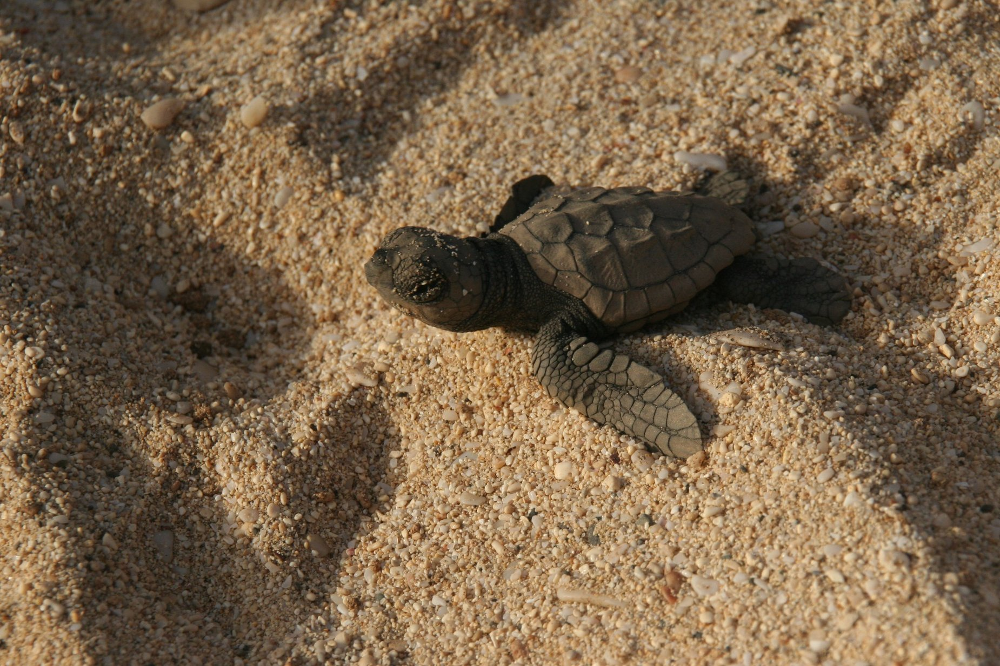
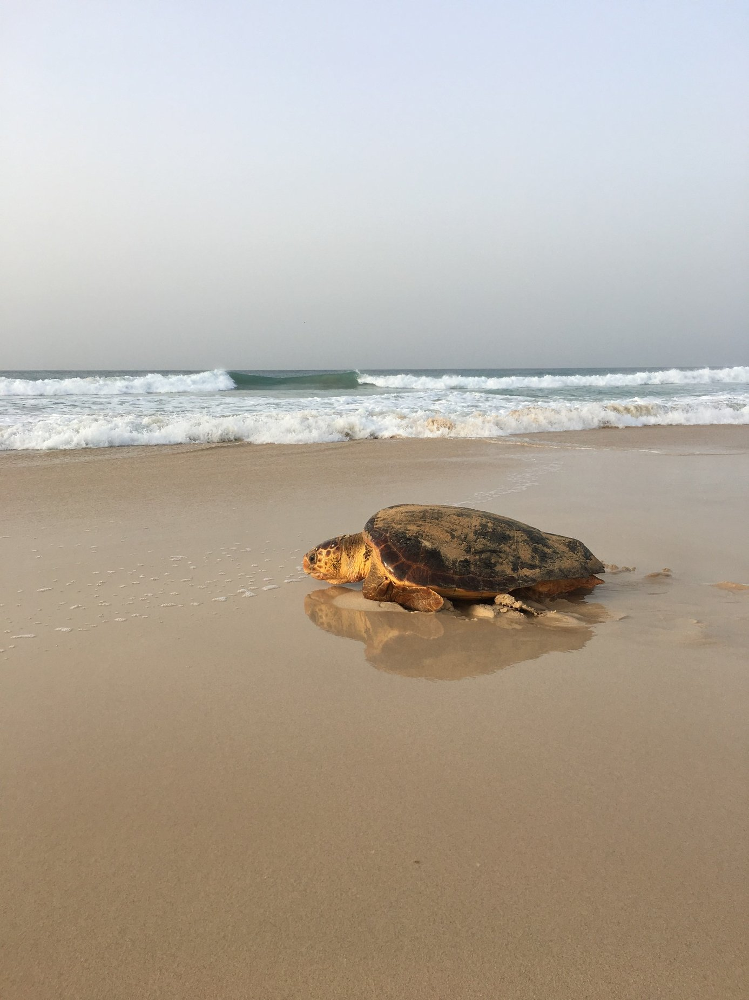
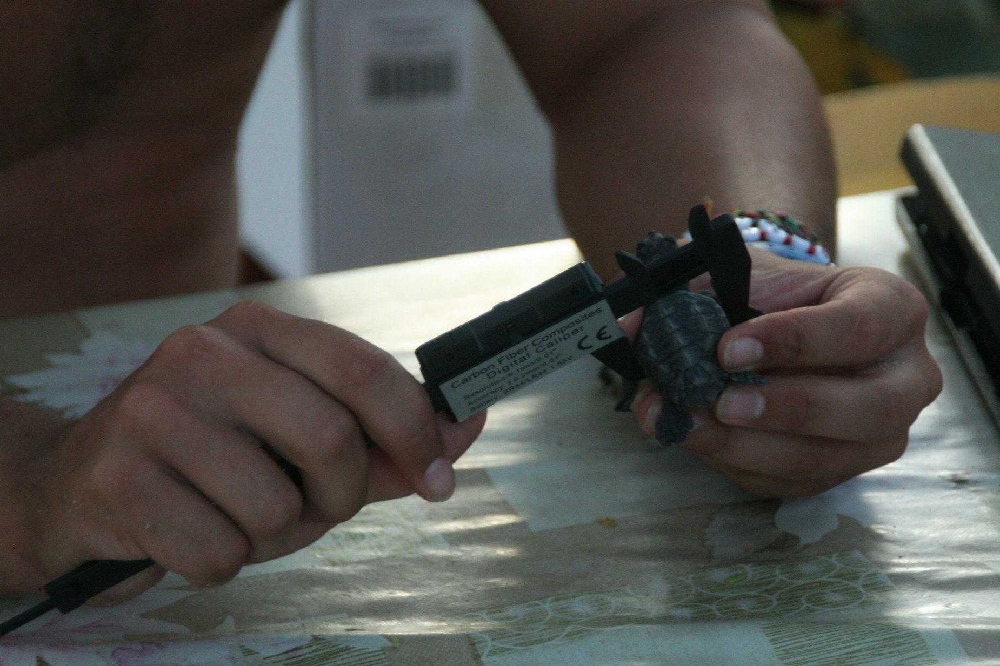

Research & Fieldwork
Questions in nature.
Answers in the field.
I study how species interact, how ecological processes shape landscapes, and what those relationships mean for biodiversity and the services ecosystems provide.
From bird-mediated ecosystem services and oak regeneration to hands-on sea turtle conservation, each project begins with curiosity about the natural world.
Explore the work

Different questions.
A shared perspective.
Work on the roles of birds in ecosystems and the processes that drive woodland regeneration. Explore the projects behind these questions.
 01 / RESEARCH
01 / RESEARCH
EVALUAVE
Assessing the functions of birds and the ecosystem services they provide in agroforestry systems.
Explore project 02 / RESEARCH
02 / RESEARCH
QueVADIS
Understanding how acorn characteristics, dispersal and facilitation influence colonisation among coexisting oak species.
Explore project

2018
Four weeks on
the turtle coast.
In 2018, I joined BIOS Cabo Verde as a conservation volunteer on Boa Vista. Night patrols, tagging and measuring loggerhead turtles, nest protection, hatchling monitoring and data management became part of the daily rhythm of a field camp by the sea.